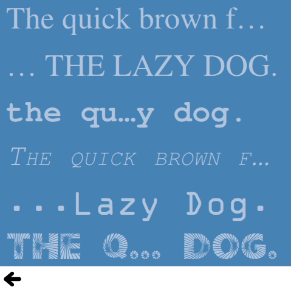

Qt Quick Examples - Text
This is a collection of QML examples relating to text.

Text is a collection of small QML examples relating to text. Each example is a small QML file, usually containing or emphasizing a particular type or feature. You can run and observe the behavior of each example.
Hello
Hello shows how to change and animate the letter spacing of a Text type. It uses a sequential animation to first animate the font.letterSpacing property from 0 to 50 over three seconds and then move the text to a random position on screen:
SequentialAnimation on font.letterSpacing {
loops: Animation.Infinite;
NumberAnimation { from: 0; to: 50; easing.type: Easing.InQuad; duration: 3000 }
ScriptAction {
script: {
container.y = (screen.height / 4) + (Math.random() * screen.height / 2)
container.x = (screen.width / 4) + (Math.random() * screen.width / 2)
}
}
}
Fonts
Fonts shows different ways of using fonts with the Text type. Simply by name, using the font.family property directly:
font.family: "Times"
or using a FontLoader type:
FontLoader { id: fixedFont; name: "Courier" }
or using a FontLoader and specifying a local font file:
FontLoader { id: localFont; source: "content/fonts/tarzeau_ocr_a.ttf" }
or finally using a FontLoader and specifying a remote font file:
FontLoader { id: webFont; source: "http://www.princexml.com/fonts/steffmann/Starburst.ttf" }
Available Fonts
Available Fonts shows how to use the Qt global object and a list view to display all the fonts available on the system. The ListView type uses the list of fonts available as its model:
model: Qt.fontFamilies()
Inside the delegate, the font family is set with the modelData:
font.family: parent.modelData
Banner
Banner is a simple example showing how to create a banner using a row of text types and a NumberAnimation.
Img Tag
Img tag shows different ways of displaying images in text objects using the <img> tag.
Text Layout
Text Layout shows how to create a more complex layout for a text item. This example lays out the text in two columns using the onLineLaidOut handler that allows you to position and resize each line:
onLineLaidOut: (line) => {
line.width = width / 2 - main.margin
if (line.y + line.height >= height) {
line.y -= height - main.margin
line.x = width / 2 + main.activeFocusmargin
}
if (line.isLast) {
lastLineMarker.x = line.x + line.implicitWidth
lastLineMarker.y = line.y + (line.height - lastLineMarker.height) / 2
}
}